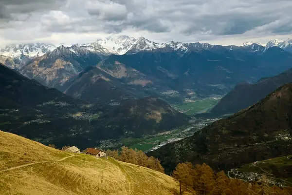

Home › Wine regions › Lombardy
Lombardy wine region

Photo: Marco Forno on Unsplash
Franciacorta sparkling and Alpine Valtellina reds.
Vines grow in all 20 regions. Wines are classed DOCG, DOC and IGT.
Climate and soil
Varied climate, from Alpine valleys to moderate lake and hill sites.
Key areas and appellations
Franciacorta DOCG, Valtellina Superiore, Oltrepò Pavese, Lugana
Good to know
Franciacorta is Italy's top traditional-method sparkling. Valtellina Nebbiolo is called Chiavennasca locally.
The grapes of Lombardy
- Nebbiolo (red): cherry, rose, tar, truffle. Best known in Piedmont, Lombardy.
- Pinot Noir (red): red cherry, earth, mushroom. Best known in Burgundy, Oregon, New Zealand.
- Chardonnay (white): apple, lemon, butter, oak. Best known in Burgundy, California, Australia.
Notable producers in Lombardy
- Ca' del Bosco
- Bellavista
- Nino Negri
- ArPePe
- Berlucchi
Official appellations
| Appellation | Status | Style | Grapes |
|---|---|---|---|
| Franciacorta (1995) Traditional-method sparkling wine from the hills south of Lake Iseo. Non-vintage needs at least 18 months on the lees, Millesimato 30; Satèn is a blanc de blancs made at lower pressure. | DOCG | Sparkling | Chardonnay, Pinot Noir, Pinot Blanc |
| Oltrepò Pavese Metodo Classico (2007) Traditional-method sparkling from the limestone and clay hills of the Oltrepò, the triangle of Lombardy south of the Po near Pavia, one of Italy's biggest Pinot Noir plantings. Blends need at least 70% Pinot Nero (85% for wines labelled Pinot Nero), with Chardonnay, Pinot Bianco or Pinot Grigio; non-vintage wines spend at least 15 months on the lees and Millesimato at least 24. Good to know: Cruasé is the consorzio's trademark for its Pinot Nero rosé sparkling. | DOCG | Sparkling, Rosé Sparkling | Pinot Noir, Chardonnay, Pinot Blanc, Pinot Grigio |
| Moscato di Scanzo (2009) Italy's smallest DOCG, about a dozen hectares on the hills of Scanzorosciate just east of Bergamo, on marly-calcareous 'sass de luna' soils. A sweet passito red from 100% Moscato di Scanzo, a rare dark-skinned Muscat: grapes dry for at least 21 days and the wine ages at least two years, with wood ageing not allowed. Good to know: sold in small bottles, it is notably high in residual sugar yet fresh, with rose, sage and spice aromas. | DOCG | Sweet | Moscato di Scanzo |
| Sforzato di Valtellina (2003) Also called Sfursat, this is Valtellina's dry red from Nebbiolo (Chiavennasca) grapes dried in airy lofts for about three months before pressing, usually not before December. Rules require at least 90% Nebbiolo, 14% alcohol and 20 months' ageing including 12 in wood. Good to know: the drying adds body and dried-cherry richness while the Alpine acidity keeps it fresher than most Amarone. | DOCG | Red | Nebbiolo |
| Valtellina Superiore (1998) In the Alps of northern Lombardy, Nebbiolo (here called Chiavennasca) grows on south-facing, dry-stone terraces of thin granite and schist above the Adda. At least 90% Nebbiolo, aged 24 months (12 in wood) and Riserva 36 months; the sub-zones Maroggia, Sassella, Grumello, Inferno and Valgella can appear on labels. Good to know: wine bottled across the border in Switzerland is labelled 'Stagafassli'. | DOCG | Red | Nebbiolo |
| Bonarda dell'Oltrepò Pavese (2010) DOC in the Oltrepò Pavese hills south of Pavia, where the Apennine foothills give clay-limestone soils and a fairly continental climate. Wines need at least 85% Croatina (called Bonarda locally) with Barbera, Uva Rara or Vespolina, made both still and, far more often, frizzante, dry or slightly sweet. Good to know: despite the name it has nothing to do with Piedmont's Bonarda grape, and the fizzy version is the classic match for salami. | DOC | Red, Sparkling | Croatina, Barbera |
| Botticino Red blend from the hills east of Brescia. | DOC | Red | Barbera, Marzemino, Sangiovese |
| Buttafuoco dell'Oltrepò Pavese (2010) Small red-only DOC on the hills of the eastern Oltrepò Pavese, south of the Po in Lombardy. Barbera and Croatina (25–65% each) with up to 45% Uva Rara and Vespolina, made still or frizzante and released from the April after harvest. Good to know: the name, roughly 'it sparks like fire', suits its deep colour and grip; it became its own DOC in 2010, having been part of Oltrepò Pavese. | DOC | Red, Sparkling | Barbera, Croatina, Uva Rara, Vespolina |
| Capriano del Colle Small DOC south of Brescia. | DOC | White, Red | Trebbiano, Marzemino, Sangiovese |
| Casteggio Barbera-based red from Casteggio in the Oltrepò. | DOC | Red | Barbera |
| Cellatica Red blend from near Brescia. | DOC | Red | Marzemino, Barbera |
| Curtefranca (1995) The still-wine DOC of Franciacorta, in the glacial moraine hills south of Lake Iseo in the province of Brescia. Bianco is at least 50% Chardonnay with Pinot Bianco and Pinot Nero; Rosso blends Merlot (min 25%), Cabernet Franc and/or Carmenère (min 20%) and Cabernet Sauvignon (10–35%). Wines with a vineyard name need longer ageing. Good to know: called Terre di Franciacorta until 2008, when it took the name of the local commune of Corte Franca. | DOC | White, Red | Chardonnay, Pinot Blanc, Pinot Noir, Merlot, Cabernet Franc, Carménère, Cabernet Sauvignon |
| Garda (1996) Umbrella DOC created in 1996 around Lake Garda, spanning the Brescia and Mantua provinces in Lombardy and Verona in Veneto, where the lake and its daily winds temper morainic, stony and calcareous soils. It is used mostly for varietal wines (at least 85% of the named grape, with Pinot Grigio the volume leader), plus blends, Charmat and Metodo Classico sparkling and Passito whites and reds. Good to know: it overlaps ten historic lakeside appellations, so many producers use it for their international varieties. | DOC | White, Red, Rosé, Sparkling, Sweet | Pinot Grigio, Garganega, Chardonnay, Merlot, Cabernet Sauvignon, Corvina |
| Garda Colli Mantovani Hills south of Lake Garda near Mantua. | DOC | White, Red | Garganega, Merlot |
| Lambrusco Mantovano Lombardy's Lambrusco, from the plains around Mantua. | DOC | Red | Lambrusco |
| Lugana (1967) White DOC on the clay soils of the southern shore of Lake Garda, shared between Lombardy (Brescia) and Veneto (Verona). At least 90% Turbiana (Trebbiano di Lugana), as Bianco, Superiore (12 months), Riserva (24 months), Vendemmia Tardiva and Spumante. Good to know: the lake's mild climate and dense clay give whites that gain honeyed texture with a few years in bottle. | DOC | White, Sparkling, Sweet | Turbiana |
| Oltrepò Pavese (1970) Large hillside DOC in the province of Pavia, south of the Po where Lombardy meets Piedmont and Emilia, with limestone and clay soils. Reds and rosati blend Barbera with Croatina; whites are led by Riesling and Welschriesling, and Riserva needs 24 months' ageing; tank-method spumante is also allowed. Good to know: Pinot Nero, Bonarda, Buttafuoco, Sangue di Giuda and Pinot Grigio became separate DOCs in 2010, and the bottle-fermented sparkling wine is its own DOCG (Oltrepò Pavese Metodo Classico). | DOC | White, Red, Rosé, Sparkling, Sweet | Barbera, Croatina, Pinot Noir, Riesling, Welschriesling, Moscato, Chardonnay, Cortese |
| Oltrepò Pavese Pinot Grigio Pinot Grigio from the Oltrepò Pavese. | DOC | White | Pinot Grigio |
| Pinot Nero dell'Oltrepò Pavese (2010) Still red DOC for Pinot Nero grown on the cool clay-limestone hills of the Oltrepò Pavese, Italy's largest Pinot Nero area. At least 95% Pinot Nero; the Riserva needs two years' ageing including six months in wood. Good to know: most of the zone's Pinot Nero goes into Oltrepò Pavese Metodo Classico DOCG sparkling, so this still version is the smaller, newer sibling (separate DOC since 2010). | DOC | Red | Pinot Noir |
| Riviera del Garda Classico (1977) DOC on the Brescia (western) shore of Lake Garda, on glacial moraine hills warmed by the lake. Chiaretto rosé and Rosso need at least 30% Groppello with Marzemino, Barbera and Sangiovese; there are also varietal Groppello, a Riesling-based Bianco and Spumante Rosé. Good to know: since 2016 Valtènesi, the heart of Chiaretto production, is a sub-zone of this DOC, with a Rosso Riserva after two years. | DOC | Rosé, Red, White, Sparkling | Groppello, Marzemino, Barbera, Sangiovese, Welschriesling |
| Rosso di Valtellina (1968) The entry-level Nebbiolo (here called Chiavennasca) of Valtellina, grown on steep, south-facing stone terraces along the Adda valley in the Alps north of Lake Como. At least 90% Nebbiolo, aged a minimum of six months and released from 1 June after the harvest; also labelled Valtellina Rosso. Good to know: it is the fresher, lighter sibling of the Valtellina Superiore and Sforzato DOCGs, often from younger vines or declassified fruit. | DOC | Red | Nebbiolo |
| San Colombano al Lambro The only DOC in the province of Milan. | DOC | Red | Croatina, Barbera |
| Sangue di Giuda dell'Oltrepò Pavese (2010) Sweet red from the same eastern Oltrepò hills as Buttafuoco, blending Barbera and Croatina with Uva Rara, Vespolina or Pinot Nero. Made still, frizzante or as Spumante Dolce, low in alcohol, with the still red holding at least 80 g/l of sugar. Good to know: 'blood of Judas' covers far more vineyard than Buttafuoco and is a classic match for fruit tarts; separate DOC since 2010. | DOC | Sweet, Red, Sparkling | Barbera, Croatina, Uva Rara, Vespolina, Pinot Noir |
| San Martino della Battaglia Tiny DOC for Tocai Friulano south of Lake Garda. | DOC | White | Friulano |
| Terre del Colleoni Varietal wines from the Bergamo hills. | DOC | White, Red | Merlot, Chardonnay |
| Valcalepio (1976) Pre-Alpine hills between Bergamo and Lake Iseo, with shale-clay and calcareous soils, vineyards up to around 600 m and cool nights. The Rosso is a Merlot and Cabernet Sauvignon blend aged at least one year (three, including one in wood, for the Riserva), the Bianco blends Chardonnay or Pinot Bianco with Pinot Grigio, and the Moscato Passito is made from grapes dried at least three weeks. Good to know: the tiny Moscato di Scanzo zone inside it became its own DOCG in 2009. | DOC | White, Red, Sweet | Merlot, Cabernet Sauvignon, Chardonnay, Pinot Blanc, Pinot Grigio, Moscato di Scanzo |
Lombardy wines to try
Ca' del Bosco Franciacorta Cuvée Prestige
Lombardy · Franciacorta · Franciacorta
Fine bubbles, white peach, citrus and toasty bread notes.
Food: Aperitivo, sushi, fried risotto balls
Nino Negri Sfursat 5 Stelle
Lombardy · Sforzato di Valtellina · Nebbiolo
Made from dried mountain Nebbiolo: cherry, dried fig, rose and spice, rich yet fresh.
Food: Braised beef, pizzoccheri, aged cheese
Bellavista Alma Grande Cuvée Brut
Lombardy · Franciacorta · Chardonnay, Pinot Noir, Pinot Blanc
Elegant Franciacorta with white flowers, lemon curd and toasted hazelnut over a fine bead.
Food: Risotto alla milanese, fritto misto
Guido Berlucchi '61 Franciacorta Brut
Lombardy · Franciacorta DOCG · Chardonnay, Pinot Noir
Bottle-fermented Italian fizz with golden apple, brioche and almond, a creamy mousse and a clean, citrus finish.
Food: Fritto misto, Parmigiano shards
Food to try with Lombardy wines
- Salmon: Salmon is rich enough for a light red: low-tannin Pinot Noir won't clash with the oily fish, and creamy Chardonnay matches its texture.
- Roast chicken: Roast chicken is a versatile partner; lightly oaked Chardonnay or a soft, low-tannin Pinot Noir or Merlot suits crisp skin and savoury gravy.
- Beef bourguignon: The beef is braised in red Burgundy, so Pinot Noir mirrors its earthy mushroom and bacon flavours without overpowering the tender meat.
- Osso buco: Northern Italian reds suit this Milanese braise: Barbera's acidity cuts the rich marrow, and Nebbiolo's tannin frames slow-cooked veal.
- Coq au vin: Red Burgundy or Beaujolais suits chicken braised in wine with mushrooms and lardons, adding red-berry fruit and earthy notes.
- Duck breast with cherry sauce: Pinot Noir's cherry fruit echoes the sauce and its acidity cuts rich duck fat, while plush Merlot suits the sweeter side of the dish.
More wine regions in Italy
The Wine Reference newsletter
New wines, stories and career guides, one email a week at most.
Over 18s only. Unsubscribe any time with one click. Your email is stored securely by Kit and never shared.
Support The Wine Reference
This guide is free, with no paywall. If it helped you choose a bottle, you can buy me a glass and keep it growing.
🍷 Buy me a glass